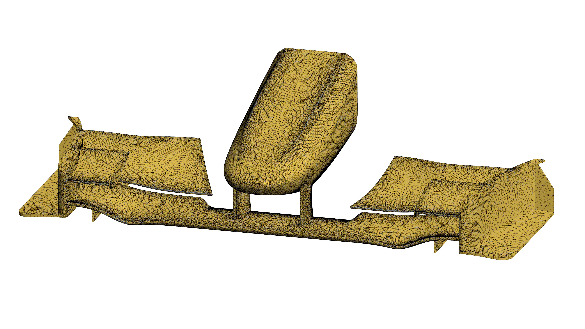
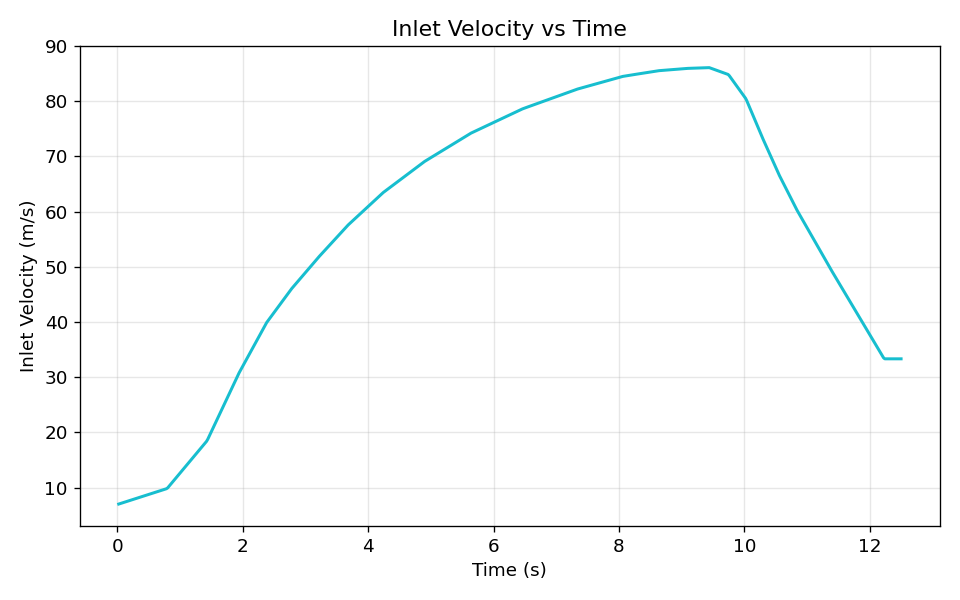

Simulation Setup
Tetrahedral meshes were generated across both the fluid and solid domains to facilitate consistent node-to-face mapping at the decoupled fluid-structure interfaces.
Targeted surface and volumetric controls refined the fluid mesh in critical high-gradient regions, notably along the leading and trailing edges, flap slot gaps, and endplate vortex shedding paths.
Domain and mesh sensitivity studies were conducted to ensure solution independence from spatial resolution and boundary blockage effects.
Structurally, the nosecone mounting interface was constrained with fixed boundary conditions, while all aerodynamic surfaces remained unconstrained to capture dynamic elastic deflection.

Transient Loading
Transient aerodynamic loading was derived from telemetry of Kimi Antonelli’s 2026 Silverstone pole lap, reconstructing the dynamic acceleration profile along the Hangar Straight.
The extracted velocity trace was formatted and mapped into STAR-CCM+ via a time-dependent CSV table to drive both the inlet boundary condition and the moving ground plane.

Flow Preconditioning
Unconditioned startup transients are demonstrated here, illustrating the initial domain settling period.
To eliminate startup initialisation artefacts from the aeroelastic data, the final methodology incorporated a 3.0-second initialisation period (corresponding to three domain flow-through times) to establish a statistically steady flow field before dynamic coupling.